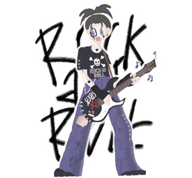
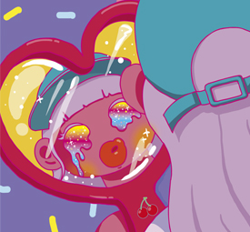

내가 좋아하는 Rock적인 요소와 펑크스러운 요소들을 합쳐 락스타를 그려보았다.
평소 상체 그림만 자주 그렸었는데 이 그림은 전신을 담았고, 테두리가 없는 그림은 처음 그려보았는데 만족스러웠다.
평소 스타일과 다른 그림체를 담았다.

Youth
동아리 전시회에서 '청춘'을 주제로 그린 그림이다. 주로 밝고 명랑한 이미지로 치부되는 청춘을 나는 어두운 내용이지만 밝은 그림체로 풀어냈다.
겉으론 내색하지 않지만, 거울 속으로 내 마음을 투영하여 본 모습을 보는 장면을 담았다.
